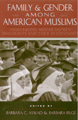

<body bgcolor="#FFFFFF" text="#000000" link="#0000FF" vlink="#CC0000" alink="#CC0000"><center><hr width="350" size="1" align="center" noshade>Diverse perspectives and groundbreaking research on gender and family issues affecting Muslim communities throughout North America<hr width="350" size="1" align="center" noshade><p><a href="https://cdcshoppingcart.uchicago.edu/Cart/ChicagoBook.aspx?ISBN=9781566394420&&PRESS=temple" target="_top">Buy this book!</a> | <a href="https://cdcshoppingcart.uchicago.edu/Cart/Cart.aspx?PRESS=temple" target="_top">View Cart</a> | <a href="https://cdcshoppingcart.uchicago.edu/Cart/Cart.aspx?PRESS=temple" target="_top">Check Out</a></p><p></p></center><!--none//--><h1>Family and Gender Among American Muslims</h1>
<H2>Issues Facing Middle Eastern Immigrants And Their Descendants</H2>
<h3>edited by Barbara C. Aswad and Barbara Bilg�</h3>
<P>cloth 1-56639-442-2 $71.50, Jun 96, <FONT COLOR=#990033>Out of Stock Unavailable</FONT>
<br>paper 1-56639-443-0 $33.95, Jun 96, <FONT COLOR=#990033>Available</FONT>
<BR> 344 pp
6x9
11&nbsp;tables 9&nbsp;halftones
</P><p>Since the beginning of the twentieth century, Muslims have been immigrating to the United States from nations such as Lebanon, Yemen, Palestine, Turkey, Iran, Pakistan, and Bangladesh. Previously underrepresented in ethnic studies literature, these nearly four million descendants of previous immigrants and the new arrivals have settled in large numbers in Los Angeles, Chicago, New York, Detroit, and other North American cities.
<p>From the social and historical conditions of the Muslim migration to a range of issues affecting Muslim American life, the contributors provide new and valuable information on topics like intergenerational conflict about identity and values, intermarriage, religious and community involvement, gender and family structure, education, the needs of the elderly, and physical and mental health problems, including AIDS. In the final section, some of these issues are given a personal dimension through the life stories of several immigrants who relate their own experiences of adjusting to life in America.
<BR>&nbsp;<h2>Excerpt</h2><P>Excerpt available at <a href="http://www.temple.edu/tempress">www.temple.edu/tempress</a></p>
<BR>&nbsp;<h2>Contents</h2><P>
<p>List of Illustrations
Preface
Introduction &#150 Barbara C. Aswad and Barbara Bilg�
<p><b>Part I: Values, Structure, and Variation in the Muslim Family</b>
<br>1. Islamic Values among American Muslims &#150 Yvonne Y. Haddad and Jane I. Smith
<br>2. Immigrant Palestinian Women Evaluate Their Lives &#150 Louise Cainkar
<br>3. Turkish-American Patterns of Intermarriage &#150 Barbara Bilg�
<br>4. Iranian Immigrant Women as Entrepreneurs in Los Angeles &#150 Arlene Dallalfar
<br>5. Parents and Youth: Perceiving and Practicing Islam in North America &#150 Nimat Hafez Barazangi
<br>6. Sex and the Single Shi'ite: Attitudes toward Mut'a Marriage in an American Lebanese Shiite Community &#150 Linda Walbridge
<br>7. South Asian Families in the United States: Pakistani, Bangladeshi, and Indian Muslims &#150 Nilufer Ahmed, Gladis Kaufman, and Shamim Naim
<br>8. The International Family: A Case Study from South Asia &#150 Gladis Kaufman and Shamim Naim
<p><b>Part II: Practical Issues for Families</b>
<br>9. Health Issues among Muslim Families in the Dearborn Michigan Area &#150 Anahid Kulwicki
<br>10. Knowledge and Perceptions of AIDS among Arab Muslims &#150 Anahid Kuwicki and Penny S. Cass
<br>11. Challenges to the Arab-American Family and ACCESS, a Local Community Center &#150 Barbara C. Aswad and Nancy Adadow Gray
<br>12. Ethnicity, Marriage, and Role Conflict: The Dilemma of a Second Generation Arab-American &#150 Jon Swanson
<br>13. Adolescent Arab Girls in an American High School &#150 Charlene Eisenlohr
<br>14. Care of the Elderly among Muslim Families &#150 Mary Cay Sengstock
<p><b>Part III: Immigrants' Life Stories</b>
<br>15. Life Experiences of Five Immigrants &#150 Linda Walbridge
<p>Notes
<br>Index
<br>About the Authors
</P><BR>&nbsp;<H2>About the Author(s)</H2>
<P><B>Barbara C. Aswad</B> is Professor of Anthropology at Wayne State University and the author of <I>Arabic Speaking Communities in American Cities</I>.</P>
<P><B>Barbara Bilg�</B> is Lecturer in Anthropology and Sociology at Eastern Michigan University and author of several articles on Turks and other Muslims in the Americas.</P>
<P>Contributors: Yvonne Y. Haddad, Jane I. Smith, Louise Cainkar, Arlene Dallalfar, Nimat Hafez Barazingi, Nilufer Ahmed, Gladis Kaufman, Shamim Naim, Anahid Kuwicki, Penny S. Cass, Nancy Adaow Gray, Jon Swanson, Charlene Eisenlohr, Mary Cay Sengstock, Linda Walbridge.</P>
<BR><H2>Subject Categories</H2>
<p><A HREF="/tempress/race.html" TARGET="_top">Race and Ethnicity</a>
<BR><A HREF="/tempress/gender.html" TARGET="_top">Gender Studies</a>
</p>
<p align="center"><a href="https://cdcshoppingcart.uchicago.edu/Cart/ChicagoBook.aspx?ISBN=9781566394420&&PRESS=temple" target="_top">Buy this book!</a> | <a href="https://cdcshoppingcart.uchicago.edu/Cart/Cart.aspx?PRESS=temple" target="_top">View Cart</a> | <a href="https://cdcshoppingcart.uchicago.edu/Cart/Cart.aspx?PRESS=temple" target="_top">Check Out</a></p><p><font face="Arial" size="1"><a href="copyright.html" onMouseOver="window.status='Web Copyright Policy';return true;" onMouseOut="window.status=''" title="Web Copyright Policy">&copy;</a> 2015 <a href="http://www.temple.edu" target="new" onMouseOver="window.status='Link to Temple University home page';return true;" onMouseOut="window.status=''" title="Link to Temple University home page">Temple University</a>. All Rights Reserved. http://www.temple.edu/tempress/titles/1255_reg.html</font></p>